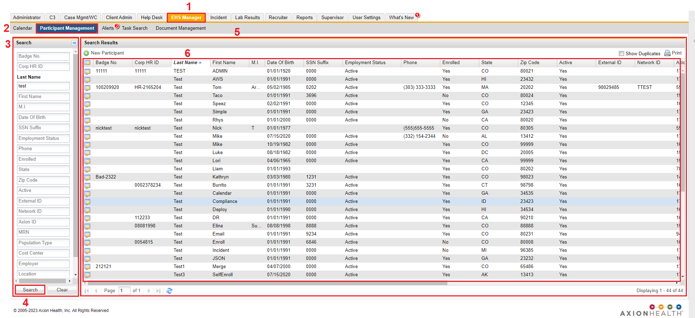
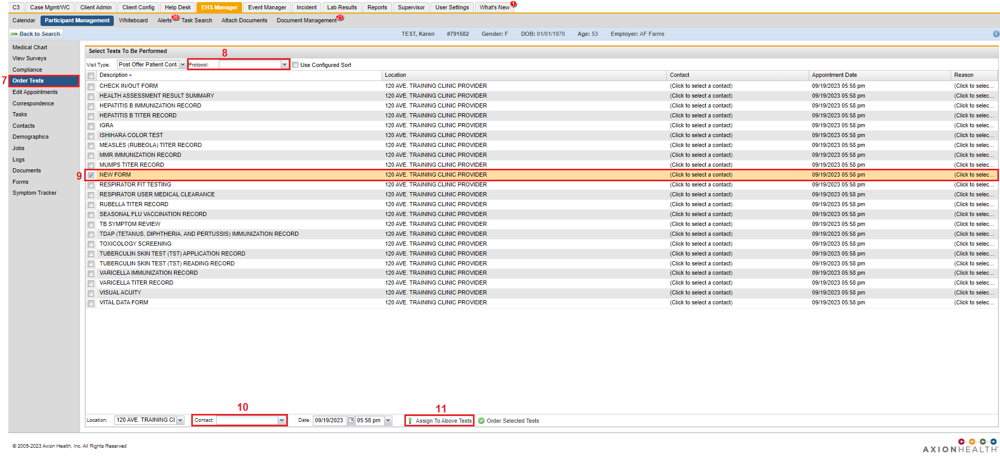
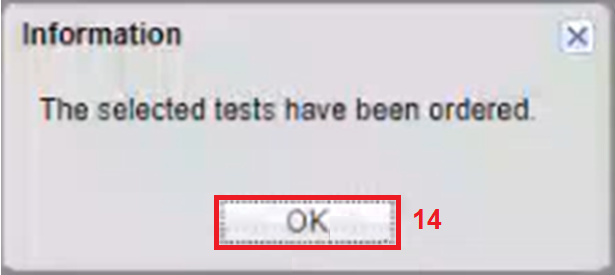
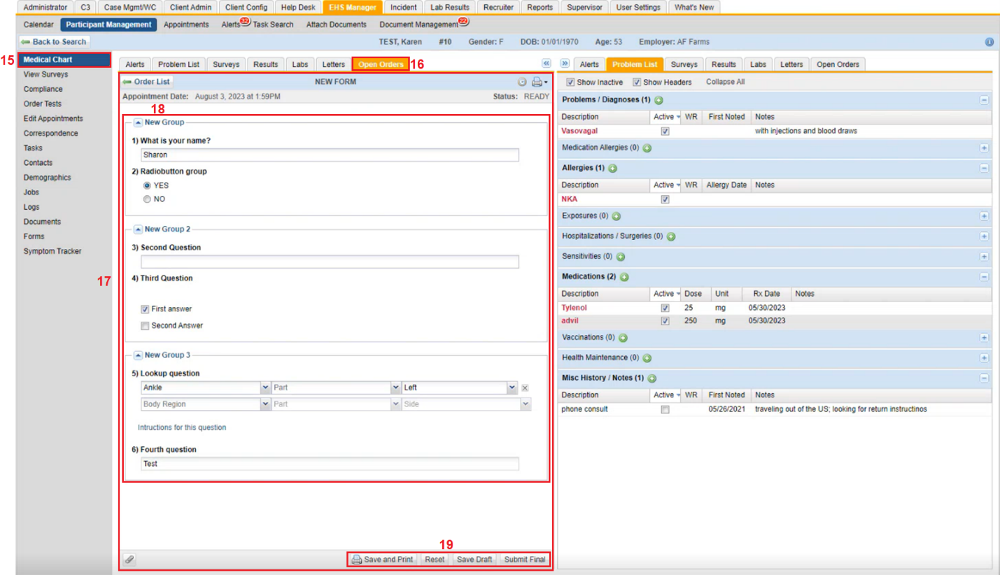

On the top navigation panel, click the EHS Manager tab.
On the secondary navigation, click Participant Management.
In the Search window, type in information of the participant you want to find.
Click Search
Results of participants with the information searched for displays to the left in the Search Results window.
Click the participant of interest.
The participants profile appears.

Click Order Tests.
The Select Tests to be Performed window appears.
Click the Protocol dropdown textbox and select the protocol of where the form was placed.
Select the charting form that was created/required.
Click the Contact dropdown textbox and select a contact.
Click Assign to Above Tests.
Notification prompt displays "Updated Tests".

Click OK.
Click Order Selected Tests.
The Information prompt displays "The selected tests have been ordered."

Click OK.

Click Medical Chart.
Click the Open Orders tab.
Scroll down to the form that was created.
The form appears.
Fill in the form.
Once the form is filled out, you can either Save and Print, Reset, Save Draft, and click Submit Final.
To view the Charting Form Results in Standard Report or Custom Report, you must click Submit Final. Save and Print and Save as Draft is considered Incomplete and will not show up in the Report until Submit Final is clicked.